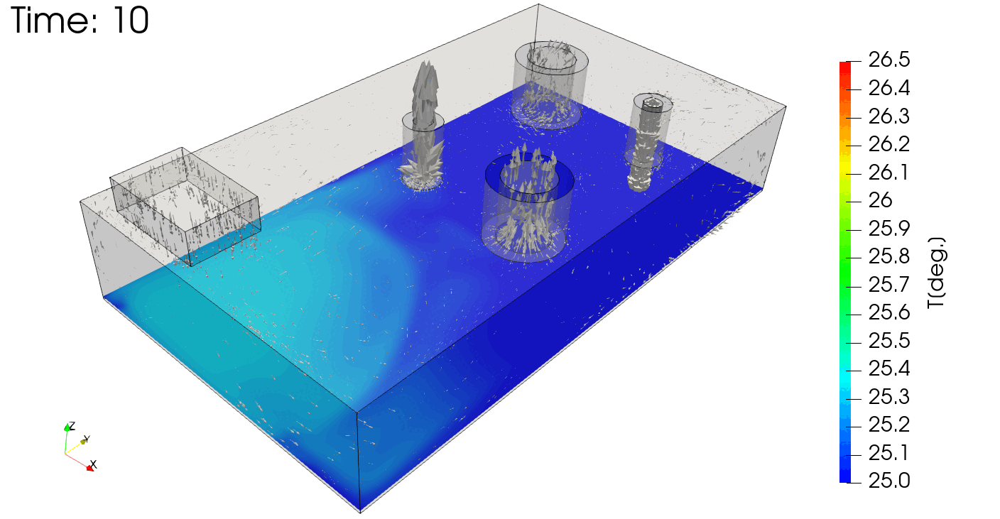
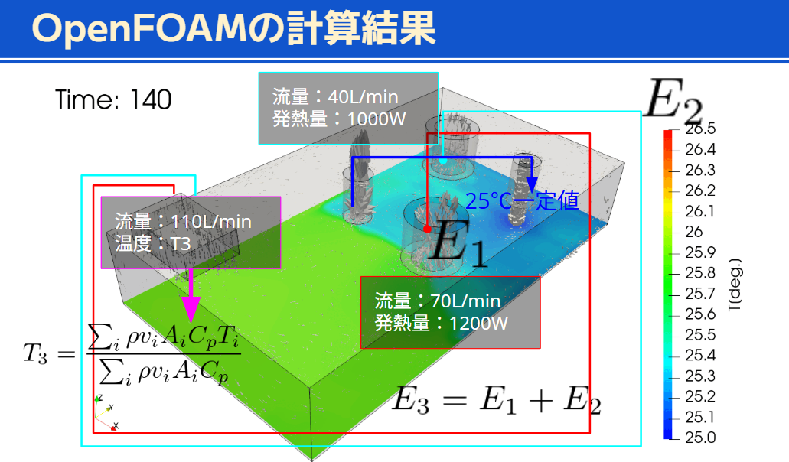
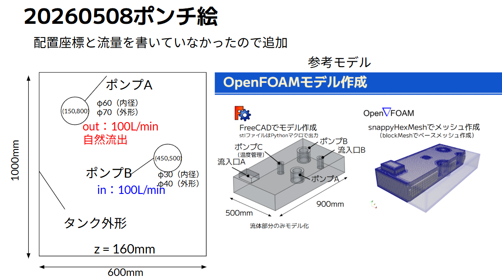
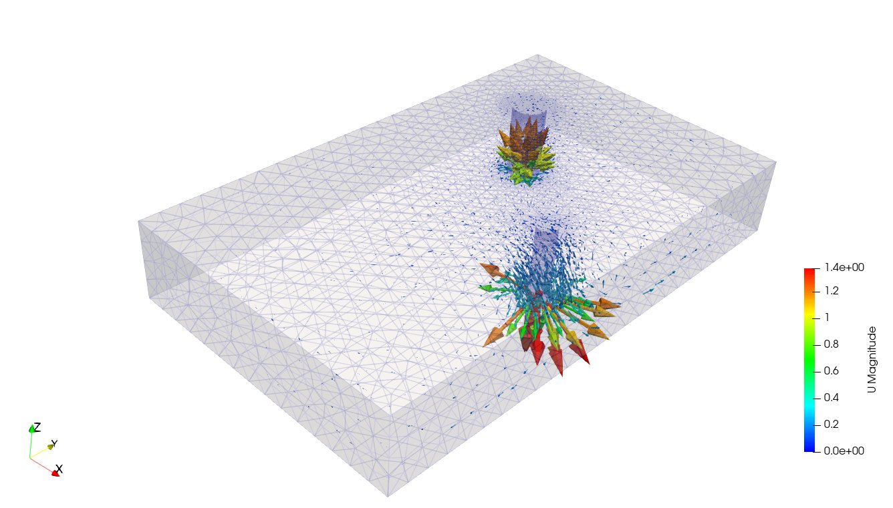

やりたいことは「AIにポンチ絵を読み解かせ、YAML仕様を作らせ、そのYAMLからメッシュ作成とOpenFOAM解析設定を生成する」こと。
横方向で章を移動、下方向で章の詳細へ進みます。

タンク内にポンプが複数あり、流れと温度が絡み合う解析。これをポンチ絵から自動でセットアップできるようにしたい。

発熱量・流量・監視点温度が絡む複合解析。設計者がポンチ絵と仕様を渡すだけで、こうした結果を得られるワークフローを目指す。
gmsh・OpenFOAMの操作知識、数十ファイルの設定、境界条件の調整など多くの手作業が発生する。
形状・流量・発熱条件をAIに伝えるだけで、メッシュ生成・解析設定・実行までを自動化する。
ポイントは、AIが毎回OpenFOAM辞書を直接手書きするのではなく、再利用できる生成プログラムを作ること。
ポンプ座標、外径、流量、流入/流出の別が、人間にもAIにも読みやすい形で残る。
YAMLを変えれば、gmshメッシュとOpenFOAM設定を同じ条件から作り直せる。
流量やポンプ位置を変える解析を、将来的に自動化しやすくなる。

ポンチ絵には、タンク寸法、ポンプ位置、ポンプ径、流量、流入/流出の意味が含まれている。
YAMLを読んで、gmshとOpenFOAMのファイルを生成するプログラムをAIに作らせる。これにより、条件変更時に同じ流れを再利用できる。
YAMLからタンクとポンプを作り、CAD差分して LLM001_pumpAB.msh を出す。
YAMLから 0/U, 0/p, controlDict などを作る。

メッシュ、速度ベクトル、流量収支を確認する。結果を見て、必要ならポンチ絵やYAMLへ戻る。
ポンチ絵や文章から、タンク寸法・ポンプ条件をYAMLに落とす。
YAMLからgmshとOpenFOAM辞書を再現性よく生成する。
流量収支や可視化結果を見て、YAMLや形状条件を更新する。
重要なのは「AIが毎回手作業する」のではなく、「AIが再利用可能な生成ワークフローを作る」こと。